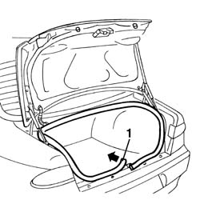
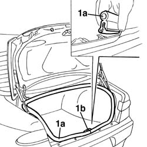

7025B66 boot compartment seal - r+r
- Path
- Procedures > 70 FITTINGS > 7025 COMPARTMENT LIDS > 7025B boot lid > 7025B66 boot compartment seal - r+r
- Kind
- repair procedure (removal / refitting; the operation number is the code)
- Applies to
- all engines; all production periods
- Interactive page
- https://sloeber94.github.io/elrnDB-a156/en/#/3238744
Applies to: all engines; all production periods
 Removing
Removing
 Refitting
Refitting7040B22 luggage compartment/load platform moulding - r+r
1. Move the seal starting from the junction.

Applies to: all engines; all production periods
Refitting
RemovingCheck that the seal is intact and without damages.
1. Insert the seal (1a) starting from the junction.
The junction must be positioned in correspondence of the locking striker (1b).
Position the seal as it is shown in the picture.

Applies to: all engines; all production periods